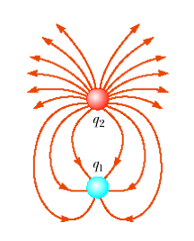
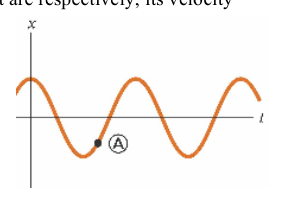
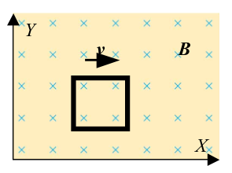
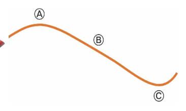
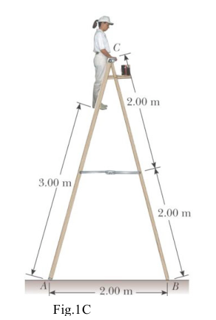
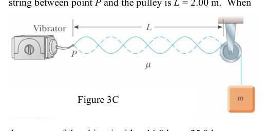

The figure on the right shows the electric field lines for two point objects separated by a small distance. The charges and can be identified as
- A. is positive; is negative;
- B. is negative; is positive;
- C. is positive; is negative;
- D. is negative; is positive;
- E. is zero with charges redistributed over the surface of object 1 due to electrostatic induction; is positive

Electric field lines two point chargesTopic: Electrostatics Metodi: Coulomb’s Law, Gauss’s Law Competenze: Diagrammatic Reasoning, Physical Reasoning Objects: Point Charge Fonte: Testo (PDF) — p.2
La figura a destra mostra le linee di campo elettrico per due oggetti puntati separati da una piccola distanza. Le spese e possono essere identificate come
- A. è positivo; è negativo;
- B. è negativo; è positivo;
- C. è positivo; è negativo;
- D. è negativo; è positivo;
- E. è zero con cariche ridistribuite sulla superficie dell’oggetto 1 a causa di induzione elettrostatica; è positivo
Line di campo elettriche a due cariche a punto
Topic: Electrostatics Metodi: Coulomb’s Law, Gauss’s Law Competenze: Diagrammatic Reasoning, Physical Reasoning Objects: Point Charge Fonte: Testo (PDF) — p.2
As a simple pendulum swings back and forth, the forces acting on the suspended object may produce positive work, negative work or produce no work. Which of the forces if any from the listed three below does no work on the pendulum?
- A. Tension.
- B. Air resistance.
- C. Gravitational force.
- D. All the forces above do no work on the pendulum.
- E. All the forces above do work on the pendulum.
Topic: Newtonian Mechanics, Oscillations & Waves Metodi: Free-Body Diagram, Conservation of Energy Competenze: Physical Reasoning, Mathematical Modeling Objects: Pendulum Fonte: Testo (PDF) — p.2
Come un semplice pendolo oscilla avanti e indietro, le forze che agiscono sull’oggetto sospeso possono produrre lavoro positivo, lavoro negativo o non produrre alcun lavoro. Quale delle tre forze, se una delle seguenti, non funziona sul pendolo?
- **A ** Tensione.
- B. Resistenza all’aria.
- C. Forza gravitazionale.
- D. Tutte le forze di sopra non funzionano sul pendolo.
- E. Tutte le forze sopra funzionano sul pendolo.
Topic: Newtonian Mechanics, Oscillations & Waves Metodi: Free-Body Diagram, Conservation of Energy Competenze: Physical Reasoning, Mathematical Modeling Objects: Pendulum Fonte: Testo (PDF) — p.2
A baseball bat is made of wood of uniform density. The bat is cut at the location of its centre of mass, as shown. Which of the following is true?
- A. The piece on the right has the smaller mass.
- B. The piece on the left has the smaller mass.
- C. Both pieces have the same mass.
- D. Impossible to determine without knowledge of the wood density.
Topic: Newtonian Mechanics, Rigid Body Statics Metodi: Physical Modeling, Symmetry Argument Competenze: Physical Reasoning, Diagrammatic Reasoning Objects: Rod Fonte: Testo (PDF) — p.2
Una mazza da baseball è fatta di legno di densità uniforme. Il pipistrello viene tagliato nella posizione del suo centro di massa, come mostrato. Quale di queste parole è vero?
- A. Il pezzo a destra ha la massa più piccola.
- B. Il pezzo sulla sinistra ha la massa più piccola.
- C. Entrambi i pezzi hanno la stessa massa.
- D. Impossibile di determinare senza conoscere la densità del legno.
Topic: Newtonian Mechanics, Rigid Body Statics Metodi: Physical Modeling, Symmetry Argument Competenze: Physical Reasoning, Diagrammatic Reasoning Objects: Rod Fonte: Testo (PDF) — p.2
A section of a hollow pipe and a solid cylinder have the same radius, mass and length. They both rotate about their long central axes with the same angular speed. Which of the following is true?
- A. The pipe has a higher rotational kinetic energy.
- B. The solid cylinder has a higher rotational kinetic energy.
- C. They have the same rotational kinetic energy.
- D. Impossible to determine without numerical data for radii, masses and lengths of the pipe and cylinder.
Topic: Rotational Dynamics Metodi: Torque & Angular Momentum Analysis, Physical Modeling Competenze: Physical Reasoning, Mathematical Modeling Objects: Tube, Cylinder Fonte: Testo (PDF) — p.2
Una sezione di un tubo vuoto e di un cilindro solido hanno lo stesso raggio, massa e lunghezza. Entrambi ruotano intorno ai loro lunghi assi centrali con la stessa velocità angolare. Quale di queste parole è vero?
- A. Il tubo ha un’energia cinetica di rotazione più elevata.
- B. Il cilindro solido ha un’energia cinetica di rotazione più elevata.
- C. Hanno la stessa energia cinetica di rotazione.
- D. Impossibile determinare senza dati numerici i radii, le masse e le lunghezze del tubo e del cilindro.
Topic: Rotational Dynamics Metodi: Torque & Angular Momentum Analysis, Physical Modeling Competenze: Physical Reasoning, Mathematical Modeling Objects: Tube, Cylinder Fonte: Testo (PDF) — p.2
In a comet-Sun system, the position of the comet closest to the Sun is called perihelion, and the position of the comet farthest from the Sun is called aphelion. The two quantities that both have their highest values when the comet is in perihelion are:
- A. the acceleration and the potential energy of the comet;
- B. the speed and the potential energy of the comet-Sun system;
- C. the speed and the acceleration of the comet;
- D. the acceleration and the total energy of the comet-Sun system.
Topic: Gravitation, Astrophysics Metodi: Kepler’s Laws, Conservation of Energy Competenze: Physical Reasoning, Mathematical Modeling Objects: Star Fonte: Testo (PDF) — p.2
In un sistema cometa-sole, la posizione della cometa più vicina al Sole è chiamata perielione, e la posizione della cometa più lontana dal Sole è chiamata afelione. Le due quantità che hanno entrambi i valori più alti quando la cometa è in perielione sono:
- A. l’accelerazione e l’energia potenziale della cometa;
- B. la velocità e l’energia potenziale del sistema cometa-sole;
- C. la velocità e l’accelerazione della cometa;
- D. l’accelerazione e l’energia totale del sistema cometa-sole.
Topic: Gravitation, Astrophysics Metodi: Kepler’s Laws, Conservation of Energy Competenze: Physical Reasoning, Mathematical Modeling Objects: Star Fonte: Testo (PDF) — p.2
When an object is at point A on the graph of a simple harmonic motion below, what are respectively, its velocity and acceleration?
- A. both positive;
- B. both negative;
- C. positive and zero;
- D. positive and negative;
- E. negative and positive.

SHM displacement-time graph point ATopic: Oscillations & Waves Metodi: Simple Harmonic Motion Analysis, Kinematic Equations Competenze: Diagrammatic Reasoning, Physical Reasoning Objects: — Fonte: Testo (PDF) — p.3
Quando un oggetto si trova al punto A sul grafico di un semplice movimento armonico sotto, quali sono rispettivamente la sua velocità e l’accelerazione?
- A. entrambi positivi;
- B. entrambi negativi;
- C. positivo e zero;
- D. positivo e negativo;
- E. negativo e positivo.
SHM punto grafico del tempo di spostamento A
Topic: Oscillations & Waves Metodi: Simple Harmonic Motion Analysis, Kinematic Equations Competenze: Diagrammatic Reasoning, Physical Reasoning Objects: — Fonte: Testo (PDF) — p.3
Does the kinetic energy of an electron have an upper limit?
- A. Yes, .
- B. Yes, .
- C. Yes, with another value.
- D. No.
Topic: Special Relativity, Modern-Quantum Physics Metodi: Relativistic Energy-Momentum, Mass-Energy Equivalence Competenze: Physical Reasoning, Mathematical Modeling Objects: Electron Fonte: Testo (PDF) — p.3
L’energia cinetica di un elettrone ha un limite superiore?
- A. Sì, .
- B. Sì, .
- C. Sì, con un altro valore.
- D. No.
Topic: Special Relativity, Modern-Quantum Physics Metodi: Relativistic Energy-Momentum, Mass-Energy Equivalence Competenze: Physical Reasoning, Mathematical Modeling Objects: Electron Fonte: Testo (PDF) — p.3
When you receive a chest x-ray at the hospital, the x-rays pass through a set of parallel ribs in your chest. Do your ribs act as a diffraction grating for the X-rays?
- A. Yes. They produce diffracted beams that can be observed separately.
- B. Not to a measurable extent. The ribs are too far apart.
- C. Essentially not. The ribs are too close together.
- D. Essentially not. The ribs are too few in number.
- E. Absolutely not. X-rays cannot diffract.
Topic: Wave Optics, Modern-Quantum Physics Metodi: Interference & Diffraction Analysis, Order-of-Magnitude Estimation Competenze: Physical Reasoning, Estimation & Approximation Objects: Diffraction Grating Fonte: Testo (PDF) — p.3
Quando ricevi una radiografia del torace in ospedale, le radiografie passano attraverso un insieme di costole parallele nel torace. Le tue costole sono una griglia di diffrazione per i raggi X?
- A. Sì. Essi producono fasci diffratti che possono essere osservati separatamente.
- B. Non in misura misurabile. Le costole sono troppo distanti.
- C. In sostanza no. Le costole sono troppo vicine.
- D. In sostanza no. Le costole sono troppo piccole.
- E’ assolutamente no. I raggi X non possono diffraggere.
Topic: Wave Optics, Modern-Quantum Physics Metodi: Interference & Diffraction Analysis, Order-of-Magnitude Estimation Competenze: Physical Reasoning, Estimation & Approximation Objects: Diffraction Grating Fonte: Testo (PDF) — p.3
A certain battery has some internal resistance. Can the potential difference across the terminals of the battery be equal to its emf?
- A. No.
- B. Yes, if the battery is absorbing energy by electrical transmission.
- C. Yes, if more than one wire is connected to each terminal.
- D. Yes, if the current in the battery is zero.
Topic: Circuits Metodi: Kirchhoff’s Laws, Equivalent Circuit Reduction Competenze: Physical Reasoning, Mathematical Modeling Objects: Battery, Wire Fonte: Testo (PDF) — p.3
Una certa batteria ha una certa resistenza interna. La differenza potenziale tra i terminali della batteria può essere uguale alla sua emf?
- A. No.
- B. Sì, se la batteria assorbe energia tramite trasmissione elettrica.
- C. Sì, se più di un filo è collegato a ciascun terminale.
- D. Sì, se la corrente della batteria è zero.
Topic: Circuits Metodi: Kirchhoff’s Laws, Equivalent Circuit Reduction Competenze: Physical Reasoning, Mathematical Modeling Objects: Battery, Wire Fonte: Testo (PDF) — p.3
A long solenoid with closely spaced turns carries electric current. Each turn of wire exerts:
- A. an attractive force on the next adjacent turn;
- B. a repulsive force on the next adjacent turn;
- C. zero force on the next adjacent turn; or
- D. either an attractive or a repulsive force on the next adjacent turn, depending on the direction of current in solenoid?
Topic: Magnetism, Electromagnetism Metodi: Ampère’s Law, Biot-Savart Law Competenze: Physical Reasoning, Diagrammatic Reasoning Objects: Solenoid, Wire Fonte: Testo (PDF) — p.3
Un lungo solenoide con curve strettamente spaziate porta corrente elettrica. Ogni giro del filo esercita:
- A. una forza di attrazione nella curva adiacente successiva;
- B. una forza repulsiva nella curva adiacente successiva;
- C. forza zero nella prossima curva adiacente; o
- D. una forza attraente o una forza repulsiva nella prossima curva adiacente, a seconda della direzione della corrente nel solenoide?
Topic: Magnetism, Electromagnetism Metodi: Ampère’s Law, Biot-Savart Law Competenze: Physical Reasoning, Diagrammatic Reasoning Objects: Solenoid, Wire Fonte: Testo (PDF) — p.3
An apple is held completely submerged just below the surface of a container of water. The apple is then moved to a deeper point in the water. Compared with the force needed to hold the apple just below the surface, what is the force needed to hold it at a deeper point?
- A. larger;
- B. essentially the same;
- C. smaller;
- D. impossible to determine.
Topic: Fluid Mechanics Metodi: Hydrostatic Equilibrium, Physical Modeling Competenze: Physical Reasoning, Estimation & Approximation Objects: Container Fonte: Testo (PDF) — p.3
Una mela viene tenuta completamente immersa appena sotto la superficie di un contenitore d’acqua. La mela viene poi spostata in un punto più profondo nell’acqua. Comparata con la forza necessaria per tenere la mela appena sotto la superficie, quale è la forza necessaria per tenerla in un punto più profondo?
- A. più grande;
- B. essenzialmente lo stesso;
- C. più piccolo;
- D. impossibile da determinare.
Topic: Fluid Mechanics Metodi: Hydrostatic Equilibrium, Physical Modeling Competenze: Physical Reasoning, Estimation & Approximation Objects: Container Fonte: Testo (PDF) — p.3
A small source radiates an electromagnetic wave with a single frequency into vacuum, equally in all directions. Indicate the pair of quantities that are decreasing as the wave moves away from the source:
- A. the frequency of the wave and an amplitude of electric field;
- B. the amplitude of the electric field and the intensity of the wave;
- C. the frequency and the intensity of the wave;
- D. the speed of propagation and the wavelength.
Topic: Oscillations & Waves, Electromagnetism Metodi: Wave Equation, Physical Modeling Competenze: Physical Reasoning, Mathematical Modeling Objects: — Fonte: Testo (PDF) — p.3
Una piccola fonte irradia un’onda elettromagnetica con una singola frequenza nel vuoto, in tutte le direzioni. Indicare la coppia di quantità che diminuiscono man mano che l’onda si allontana dalla fonte:
- A. la frequenza dell’onda e l’ampiezza del campo elettrico;
- B. l’ampiezza del campo elettrico e l’intensità dell’onda;
- C. la frequenza e l’intensità dell’onda;
- D. velocità di propagazione e lunghezza d’onda.
Topic: Oscillations & Waves, Electromagnetism Metodi: Wave Equation, Physical Modeling Competenze: Physical Reasoning, Mathematical Modeling Objects: — Fonte: Testo (PDF) — p.3
Two identical balls with completely smooth surfaces are moving uniformly in free space without rotation. At some moment, they undergo a perfectly elastic glancing collision. After the collision, the angle between the two vectors of velocities is
- A.
- B.
- C.
- D. Impossible to answer without knowledge of the angle between the two velocities before the collision.
Topic: Newtonian Mechanics, Conservation of Momentum Metodi: Conservation of Momentum, Conservation of Energy Competenze: Physical Reasoning, Mathematical Modeling Objects: Ball Fonte: Testo (PDF) — p.3
Due palle identiche con superfici completamente lisce si muovono uniformemente nello spazio libero senza rotazione. In un certo momento, subiscono una collisione di sguardo perfettamente elastico. Dopo la collisione, l’angolo tra i due vettori di velocità è
- A.
- B.
- C.
- D. Impossibile rispondere senza conoscere l’angolo tra le due velocità prima della collisione.
Topic: Newtonian Mechanics, Conservation of Momentum Metodi: Conservation of Momentum, Conservation of Energy Competenze: Physical Reasoning, Mathematical Modeling Objects: Ball Fonte: Testo (PDF) — p.3
Car batteries are often rated in ampere-hours. Does this information designate the amount of
- A. potential that the battery can supply;
- B. power;
- C. charge;
- D. energy?
Topic: Circuits Metodi: Dimensional Analysis, Physical Modeling Competenze: Physical Reasoning, Unit Conversion Objects: Battery Fonte: Testo (PDF) — p.3
Le batterie delle auto sono spesso valutate in ampere ore. Le informazioni indicano l’importo di
- A. potenziale che la batteria può fornire;
- B. potenza;
- carico C.;
- ** D.** energia?
Topic: Circuits Metodi: Dimensional Analysis, Physical Modeling Competenze: Physical Reasoning, Unit Conversion Objects: Battery Fonte: Testo (PDF) — p.3
A laser beam travels from glass into air and strikes normally the smooth interface between the two media. In the air
- A. the light travels with a lower speed normally to the interface;
- B. the light travels with a higher speed normally to the interface;
- C. the light travels with unchanged speed but bends away from the normal;
- D. the light travels with a higher speed and bends away from the normal;
- E. the light travels with a lower speed and bends away from the normal.
Topic: Geometric Optics Metodi: Snell’s Law, Ray Tracing Competenze: Physical Reasoning, Mathematical Modeling Objects: — Fonte: Testo (PDF) — p.3
Un raggio laser viaggia dal vetro nell’aria e colpisce normalmente l’interfaccia liscia tra i due media. - In aria .
- A. la luce viaggia normalmente a velocità inferiore verso l’interfaccia;
- B. la luce viaggia con una velocità superiore normalmente all’interfaccia;
- C. la luce viaggia a velocità inalterata ma si allontana dalla normalità;
- D. la luce viaggia a una velocità più elevata e si allontana dalla normale;
- E. la luce viaggia a una velocità inferiore e si allontana dalla normalità.
Topic: Geometric Optics Metodi: Snell’s Law, Ray Tracing Competenze: Physical Reasoning, Mathematical Modeling Objects: — Fonte: Testo (PDF) — p.3
If only one external force acts on an object,
- A. it always changes the kinetic energy of the object;
- B. it always changes the speed of the object;
- C. it always changes the momentum of the object.
Topic: Newtonian Mechanics, Conservation of Momentum Metodi: Free-Body Diagram, Impulse-Momentum Theorem Competenze: Physical Reasoning, Mathematical Modeling Objects: — Fonte: Testo (PDF) — p.4
Se solo una forza esterna agisce su un oggetto,
- A. cambia sempre l’energia cinetica dell’oggetto;
- B. cambia sempre la velocità dell’oggetto;
- C. cambia sempre l’impulso dell’oggetto.
Topic: Newtonian Mechanics, Conservation of Momentum Metodi: Free-Body Diagram, Impulse-Momentum Theorem Competenze: Physical Reasoning, Mathematical Modeling Objects: — Fonte: Testo (PDF) — p.4
A square conductive frame is moving in the vertical plane at a constant velocity through a region of uniform magnetic field directed perpendicular to the plane of the frame as shown in the figure. Does charge separation occur in the frame?
- A. Yes, with the top positive.
- B. Yes, with the top negative.
- C. No.
- D. Yes, with the left side negative.
- E. Yes, with the left side positive.

Conductive frame moving in uniform B fieldTopic: Electromagnetic Induction, Electromagnetism Metodi: Lorentz Force Analysis, Faraday’s Law of Induction Competenze: Diagrammatic Reasoning, Physical Reasoning Objects: Wire Fonte: Testo (PDF) — p.4
Un telaio conduttore quadrato si muove nel piano verticale a velocità costante attraverso una regione di campo magnetico uniforme diretto perpendicolare al piano del telaio come mostrato nella figura. Si verifica una separazione di carica nel quadro?
- A. Sì, con il massimo positivo.
- B. Sì, con il negativo superiore.
- C. No.
- D. Sì, con lato sinistro negativo.
- E. Sì, con lato sinistro positivo.
Rame conduttore in movimento in un campo B uniforme
Topic: Electromagnetic Induction, Electromagnetism Metodi: Lorentz Force Analysis, Faraday’s Law of Induction Competenze: Diagrammatic Reasoning, Physical Reasoning Objects: Wire Fonte: Testo (PDF) — p.4
A person spear-fishing from a boat sees a stationary fish a few meters away in a direction about below the horizontal. The index of refraction of the water is . Assume the dense spear does not change direction when it enters the water. To spear the fish, the person should
- A. aim above where he sees the fish;
- B. aim precisely at the fish; or
- C. aim below the fish?
Topic: Geometric Optics Metodi: Snell’s Law, Ray Tracing Competenze: Physical Reasoning, Diagrammatic Reasoning Objects: — Fonte: Testo (PDF) — p.4
Una persona che pesca con la lancia da una barca vede un pesce fermo a pochi metri di distanza in una direzione di circa sotto l’orizzontale. L’indice di rifrazione dell’acqua è . Supponiamo che la lancia densa non cambie direzione quando entra nell’acqua. Per lanciare il pesce, la persona dovrebbe
- A. mira sopra dove vede il pesce;
- B. mirano precisamente al pesce; o
- C. mira sotto il pesce?
Topic: Geometric Optics Metodi: Snell’s Law, Ray Tracing Competenze: Physical Reasoning, Diagrammatic Reasoning Objects: — Fonte: Testo (PDF) — p.4
A spacecraft built in the shape of a sphere moves past an observer on the Earth with a speed of . Approximately what shape does the observer measure for the spacecraft as it goes by?
- A. A sphere.
- B. A cigar shape, elongated along the direction of motion.
- C. A round “pillow” shape, flattened along the direction of motion.
- D. A conical shape, pointing in the direction of motion.
Topic: Special Relativity Metodi: Lorentz Transformation, Physical Modeling Competenze: Physical Reasoning, Mathematical Modeling Objects: Satellite Fonte: Testo (PDF) — p.4
Una nave spaziale costruita a forma di sfera si sposta davanti ad un osservatore sulla Terra con una velocità . Circa quale forma l’osservatore misura per la sonda spaziale mentre passa?
- A. Una sfera.
- B. Una forma di sigaro, allungata lungo la direzione del movimento.
- C. Forma rotonda di “cuscino”, appiattita lungo la direzione del movimento.
- D. Una forma conica, che punta nella direzione del movimento.
Topic: Special Relativity Metodi: Lorentz Transformation, Physical Modeling Competenze: Physical Reasoning, Mathematical Modeling Objects: Satellite Fonte: Testo (PDF) — p.4
One litre of water in a light thin-walled vessel is heated up under atmospheric pressure by an electric heater with unknown power rating. Initially the temperature of the water is . After the temperature becomes , it stops increasing, while the heater is still on. As the heater is unable to boil water, it is turned off. During the first 20 seconds the water becomes 2 degrees cooler.
Estimate the power output of the heater.
- A.
- B.
- C.
- D.
Topic: Thermodynamics Metodi: First Law of Thermodynamics, Order-of-Magnitude Estimation Competenze: Estimation & Approximation, Physical Reasoning Objects: Container, Resistor Fonte: Testo (PDF) — p.4
Un litro di acqua in un recipiente leggero e a pareti sottili viene riscaldato sotto pressione atmosferica da un riscaldatore elettrico con potenza sconosciuta. Inizialmente la temperatura dell’acqua è . Dopo che la temperatura diventa , essa smette di aumentare, mentre il riscaldatore è ancora acceso. Poiché il riscaldatore non è in grado di bollire l’acqua, viene spento. Durante i primi 20 secondi l’acqua diventa 2 gradi più fredda.
Calcolare la potenza uscita del riscaldatore.
- A.
- B.
- C.
- D.
Topic: Thermodynamics Metodi: First Law of Thermodynamics, Order-of-Magnitude Estimation Competenze: Estimation & Approximation, Physical Reasoning Objects: Container, Resistor Fonte: Testo (PDF) — p.4
Part B, Question 1.
A car accelerates uniformly along a curved horizontal road, moving from left toward right, as it is seen from a helicopter. Draw
(I) the vectors representing the forces exerted by the road on the car at points and ; (II) the vector of velocity at point .
Topic: Newtonian Mechanics Metodi: Free-Body Diagram, Vector Decomposition Competenze: Diagrammatic Reasoning, Physical Reasoning Objects: Cart Fonte: Testo (PDF) — p.4
Parte B, domanda 1.
Una macchina accelera uniformemente lungo una strada orizzontale curva, spostandosi da sinistra a destra, come si vede da un elicottero. Scatta
I) i vettori che rappresentano le forze esercitate dalla strada sulla vettura ai punti e ; (II) il vettore di velocità al punto .
Topic: Newtonian Mechanics Metodi: Free-Body Diagram, Vector Decomposition Competenze: Diagrammatic Reasoning, Physical Reasoning Objects: Cart Fonte: Testo (PDF) — p.4
Part B, Question 2.
Single-slit diffraction is observed with an interference pattern on a screen behind a slit for a red light source. The red light source is then replaced by a violet light source of the same intensity, without any changes to distances and the slit width. Use the “Intensity/Position” system of coordinates as on the figure below, to sketch the interference pattern on the screen for the two sources of light. If you think that the patterns are identical, show just one pattern. If you think that the two sources produce different patterns on the screen, make it clear which pattern corresponds to a given colour.

Intensity vs position axes for diffraction patternTopic: Wave Optics Metodi: Interference & Diffraction Analysis, Wave Equation Competenze: Diagrammatic Reasoning, Mathematical Modeling Objects: Slit, Screen Fonte: Testo (PDF) — p.4
Parte B, domanda 2.
La diffrazione a fessura singola è osservata con un modello di interferenza su uno schermo dietro una fessura per una fonte di luce rossa. La fonte di luce rossa viene quindi sostituita da una fonte di luce viola della stessa intensità, senza alcuna modifica delle distanze e della larghezza della fessura. Utilizzare il sistema di coordinate “Intensità/Posizione” come nella figura seguente, per disegnare il modello di interferenza sullo schermo per le due fonti di luce. Se pensi che i modelli siano identici, mostra solo un modello. Se si pensa che le due fonti producano modelli diversi sullo schermo, chiarificare quale corrisponde a un determinato colore.
Intensità vs assi di posizione per modello di diffrazione
Topic: Wave Optics Metodi: Interference & Diffraction Analysis, Wave Equation Competenze: Diagrammatic Reasoning, Mathematical Modeling Objects: Slit, Screen Fonte: Testo (PDF) — p.4
Part B, Question 3.
A skydiver jumps out of a plane at an altitude of and begins her descent. At , the skydiver reaches her terminal speed of . When the skydiver descends to a height of from the ground, she deploys her parachute which rapidly slows her down to to ensure a safe landing. Qualitatively, sketch the (vertical) speed of the skydiver as a function of height above ground starting just after she jumps out of the plane and finishing just before she lands.
Topic: Newtonian Mechanics, Fluid Mechanics Metodi: Kinematic Equations, Free-Body Diagram Competenze: Diagrammatic Reasoning, Physical Reasoning Objects: Projectile Fonte: Testo (PDF) — p.5
Parte B, domanda 3.
Un paracadutista salta da un aereo ad un’altitudine di e inizia la sua discesa. A , il paracadutista raggiunge la sua velocità terminale di . Quando il paracadutista scende a un’altezza di dal suolo, dispone il suo paracadute che lo rallenta rapidamente a per garantire un atterraggio sicuro. Qualitativamente, disegna la velocità (verticale) dello schiantatore come funzione dell’altezza sopra il suolo a partire subito dopo il salto dall’aereo e terminando poco prima di atterrare.
Topic: Newtonian Mechanics, Fluid Mechanics Metodi: Kinematic Equations, Free-Body Diagram Competenze: Diagrammatic Reasoning, Physical Reasoning Objects: Projectile Fonte: Testo (PDF) — p.5
Part C, Problem 1.
A stepladder of negligible weight is constructed as shown in Figure 1C. A painter of mass stands on the ladder from the bottom. Assuming the floor is frictionless, find
- A. the tension in the horizontal bar connecting the two halves of the ladder,
- B. the normal forces at and , and
- C. the components of the reaction force at the single hinge that the left half of the ladder exerts on the right half.

Stepladder with painter, hinge C, points A BTopic: Rigid Body Statics, Newtonian Mechanics Metodi: Torque & Angular Momentum Analysis, Free-Body Diagram Competenze: Diagrammatic Reasoning, Mathematical Modeling Objects: Rod, Lever Fonte: Testo (PDF) — p.5
Parte C, problema 1.
Si costruisce una scala di peso trascurabile come mostrato alla figura 1C. Un pittore di massa si trova sulla scala dal basso. Supponendo che il pavimento sia senza attriti, trovare
- A. la tensione nella barra orizzontale che collega le due metà della scala,
- B. le forze normali a e , e
- C. i componenti della forza di reazione della singola cerniera che la metà sinistra della scala esercita sulla metà destra.
Step ladder con pittore, cerniera C, punti A B
Topic: Rigid Body Statics, Newtonian Mechanics Metodi: Torque & Angular Momentum Analysis, Free-Body Diagram Competenze: Diagrammatic Reasoning, Mathematical Modeling Objects: Rod, Lever Fonte: Testo (PDF) — p.5
Part C, Problem 2.
Two horizontal metal plates, each square, are aligned apart, with one above the other. They are given equal-magnitude charges of opposite sign so that a uniform downward electric field of exists in the region between them. A particle of mass and with a positive charge of leaves the centre of the bottom negative plate with an initial speed of at an angle of above the horizontal.
- A. Find the trajectory of the particle.
- B. Which plate does it strike?
- C. Where does it strike, relative to its starting point?
Topic: Electrostatics, Newtonian Mechanics Metodi: Electric Potential Method, Kinematic Equations Competenze: Mathematical Modeling, Physical Reasoning Objects: Capacitor, Point Charge Fonte: Testo (PDF) — p.5
**Parte C, problema 2. **
Due lastre metalliche orizzontali, ciascuna quadrata , sono allineate , una sopra l’altra. Le cariche di grandezza uguale di segno opposto sono assegnate in modo che nel territorio che le separa esiste un campo elettrico uniforme a discesa di . Una particella di massa e con una carica positiva di lascia il centro della piastra negativa inferiore con una velocità iniziale di ad un angolo di sopra l’orizzontale.
- A. Trova la traiettoria della particella.
- MSK1/>B.** Che piastra colpisce?
- C. Dove colpisce, rispetto al suo punto di partenza?
Topic: Electrostatics, Newtonian Mechanics Metodi: Electric Potential Method, Kinematic Equations Competenze: Mathematical Modeling, Physical Reasoning Objects: Capacitor, Point Charge Fonte: Testo (PDF) — p.5
Part C, Problem 3.
In the arrangement shown in Figure 3C, an object is hung from a string (with linear mass density ) that passes over a light pulley. The string is connected to a vibrator (of constant frequency ), and the length of the string between point and the pulley is . When the mass of the object is either or , standing waves are observed; however, no standing waves are observed with any mass between these values. The speed of a transverse wave in a string experiencing the tension is given by:
- A. What is the frequency of the vibrator?
- B. What is the total number of nodes observed along the compound string at this frequency, excluding the nodes at the vibrator and the pulley?
- C. What is the largest object mass for which standing waves could be observed?

String vibrator pulley hanging mass arrangementTopic: Oscillations & Waves Metodi: Wave Equation, Simple Harmonic Motion Analysis Competenze: Mathematical Modeling, Physical Reasoning Objects: String, Pulley, Block, Tuning Fork Fonte: Testo (PDF) — p.5
**Parte C, problema 3. **
Nella disposizione mostrata nella figura 3C, un oggetto è appeso a una corda (con densità di massa lineare ) che passa sopra una polea leggera. La corda è collegata a un vibratore (di frequenza costante ) e la lunghezza della corda tra il punto e la polla è . Quando la massa dell’oggetto è o , sono osservate onde in piedi; tuttavia, non sono osservate onde in piedi con alcuna massa tra questi valori. La velocità di un’onda trasversale in una corda che subisce la tensione è data da:
- A. Qual è la frequenza del vibratore?
- B. Qual è il numero totale di nodi osservati lungo la stringa composta a questa frequenza, esclusi i nodi al vibratore e alla polla?
- C. Qual è la massa di oggetto più grande per la quale si possono osservare onde in piedi?
Sistema di massa appesa della pollice a vibrazione a corda
Topic: Oscillations & Waves Metodi: Wave Equation, Simple Harmonic Motion Analysis Competenze: Mathematical Modeling, Physical Reasoning Objects: String, Pulley, Block, Tuning Fork Fonte: Testo (PDF) — p.5